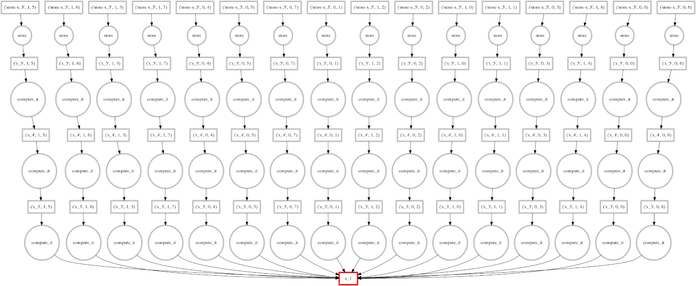
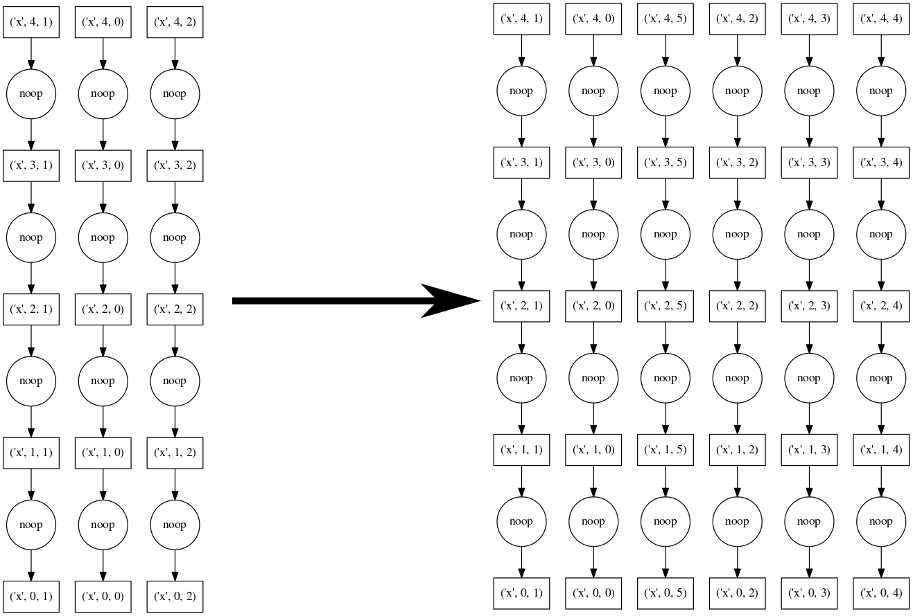
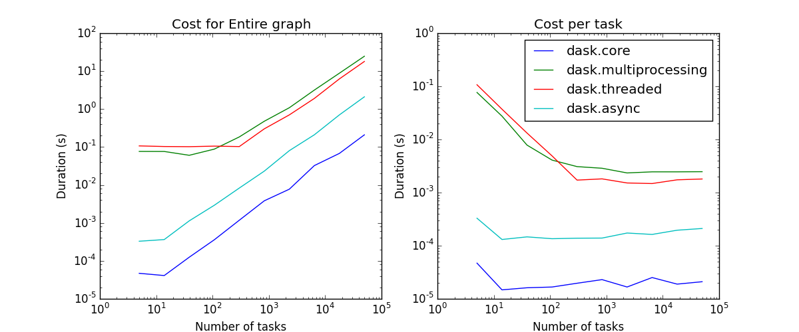
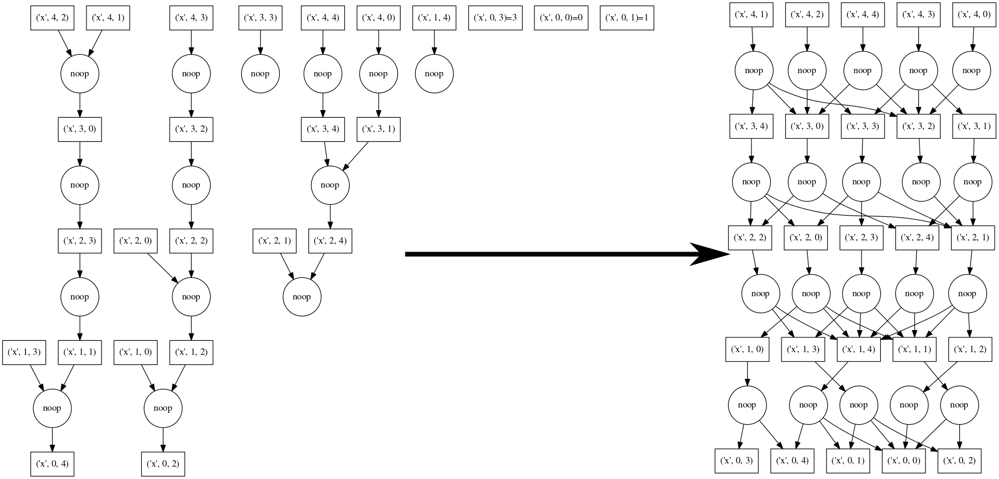
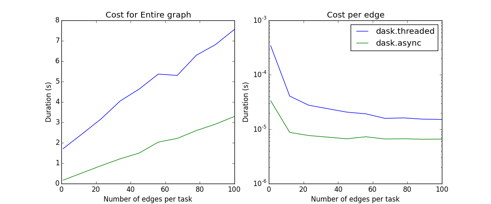

Shared Memory¶
The asynchronous scheduler requires an apply_async function and a
Queue. These determine the kind of worker and parallelism that we exploit.
apply_async functions can be found in the following places:
multithreading.Pool().apply_async- uses multiple processesmultithreading.pool.ThreadPool().apply_async- uses multiple threadsdask.local.apply_sync- uses only the main thread (useful for debugging)
Full dask get functions exist in each of dask.threaded.get,
dask.multiprocessing.get and dask.get respectively.
Policy¶
The asynchronous scheduler maintains indexed data structures that show which tasks depend on which data, what data is available, and what data is waiting on what tasks to complete before it can be released, and what tasks are currently running. It can update these in constant time relative to the number of total and available tasks. These indexed structures make the dask async scheduler scalable to very many tasks on a single machine.
{kind=link}
To keep the memory footprint small, we choose to keep ready-to-run tasks in a last-in-first-out stack such that the most recently made available tasks get priority. This encourages the completion of chains of related tasks before new chains are started. This can also be queried in constant time.
Performance¶
EDIT: The experiments run in this section are now outdated. Anecdotal testing shows that performance has improved significantly. There is now about 200 us overhead per task and about 1 ms startup time.
tl;dr The threaded scheduler overhead behaves roughly as follows:
1ms overhead per task
100ms startup time (if you wish to make a new ThreadPool each time)
Constant scaling with number of tasks
Linear scaling with number of dependencies per task
Schedulers introduce overhead. This overhead effectively limits the granularity of our parallelism. Below we measure overhead of the async scheduler with different apply functions (threaded, sync, multiprocessing), and under different kinds of load (embarrassingly parallel, dense communication).
The quickest/simplest test we can do it to use IPython’s timeit magic:
In [1]: import dask.array as da
In [2]: x = da.ones(1000, chunks=(2,)).sum()
In [3]: len(x.dask)
Out[3]: 1001
In [4]: %timeit x.compute()
1 loops, best of 3: 550 ms per loop
So this takes about 500 microseconds per task. About 100ms of this is from overhead:
In [6]: x = da.ones(1000, chunks=(1000,)).sum()
In [7]: %timeit x.compute()
10 loops, best of 3: 103 ms per loop
Most of this overhead is from spinning up a ThreadPool each time. This may be mediated by using a global or contextual pool:
>>> from multiprocessing.pool import ThreadPool
>>> pool = ThreadPool()
>>> dask.config.set(pool=pool) # set global threadpool
or
>>> with dask.config.set(pool=pool) # use threadpool throughout with block
... ...
We now measure scaling the number of tasks and scaling the density of the graph:
{kind=link}
Linear scaling with number of tasks¶
As we increase the number of tasks in a graph, we see that the scheduling overhead grows linearly. The asymptotic cost per task depends on the scheduler. The schedulers that depend on some sort of asynchronous pool have costs of a few milliseconds and the single threaded schedulers have costs of a few microseconds.
 {kind=link}
Linear scaling with number of edges¶
As we increase the number of edges per task, the scheduling overhead again increases linearly.
Note: Neither the naive core scheduler nor the multiprocessing scheduler are good at workflows with non-trivial cross-task communication; they have been removed from the plot.
Known Limitations¶
The shared memory scheduler has some notable limitations:
It works on a single machine
The threaded scheduler is limited by the GIL on Python code, so if your operations are pure python functions, you should not expect a multi-core speedup
The multiprocessing scheduler must serialize functions between workers, which can fail
The multiprocessing scheduler must serialize data between workers and the central process, which can be expensive
The multiprocessing scheduler cannot transfer data directly between worker processes; all data routes through the master process.